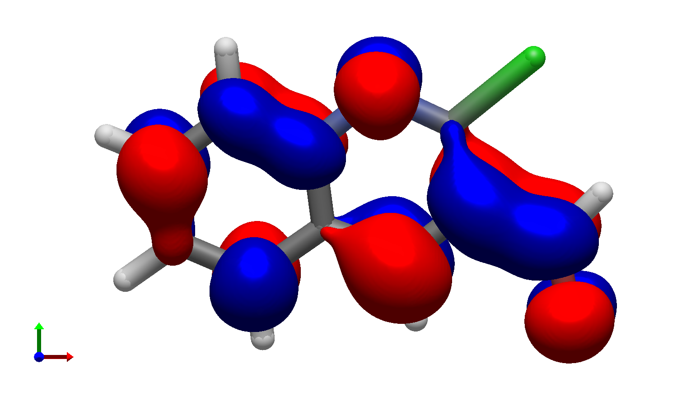
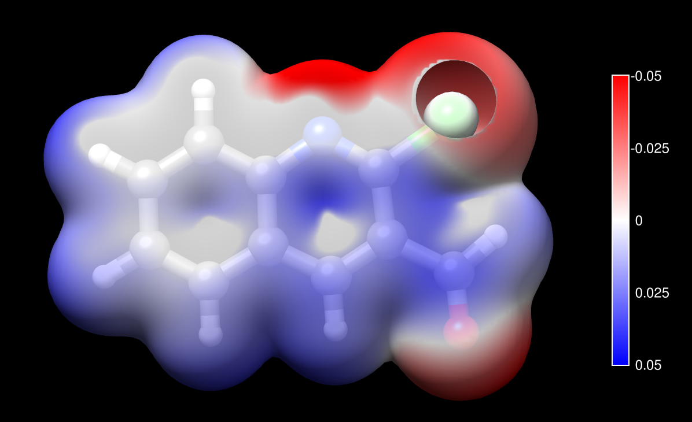
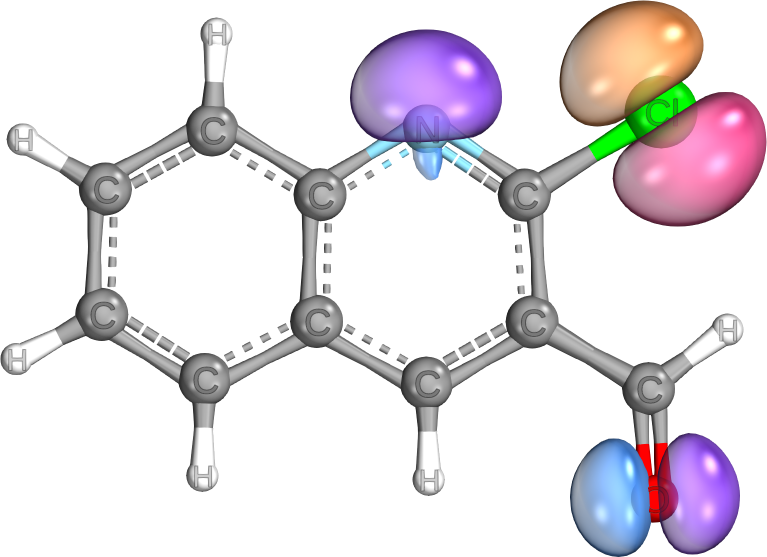
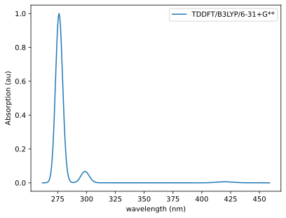
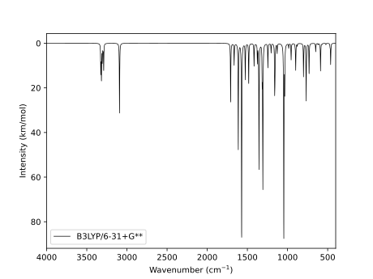

xyz3d.py

molden.py
calculate interatomic distance

density dan potential MEP 3D

pyscf tools for Mulliken atomic charge

TD-DFT

Simulated FT-IR spectra
Reference Manager Zotero
This website is created using Sphinx Here is a simple tutor of Sphinx
This website is created using Sphinx
Here is a simple tutor of Sphinx